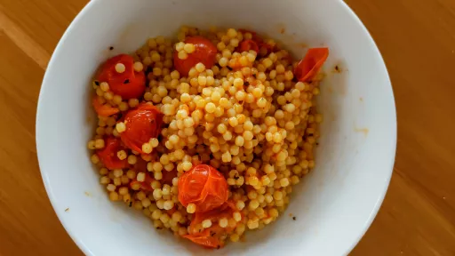

25 mins
Serves 4VegetarianDairy FreeNut Free
Italian

This is a simple dish with few ingredients and lots of flavor. The sauce is incredibly sweet and wraps itself around each nugget of couscous in the most delicious way.
Ingredients
1⅓cups pearl couscous
2quarts water
Salt to taste
2tbsp extra-virgin olive oil
2cloves garlic, minced or pureed
1lb cherry tomatoes, the sweetest you can find, cut in half
¼tsp sugar
1sprig basil
2
tbsp, or more, slivered basil leaves
Instructions
Heat a large saucepan over medium-high heat and add couscous. Toast couscous, shaking pan or stirring often, until it colors very lightly and smells aromatic and toasty, a bit like popcorn. Immediately add 2 quarts water and salt to taste (be generous, as if you are cooking pasta) and boil 10 minutes, until couscous is al dente; it should not be mushy, and there should still be plenty of water in the pot. Drain through a strainer and rinse with cold water. Tap strainer against sink to drain well, then return couscous to the pot, cover pot with a kitchen towel, and return lid. Let sit for 10 minutes while you make the sauce.
In a wide, heavy skillet, heat olive oil over medium heat and add garlic. As soon as it begins to sizzle and smell fragrant, usually in about 30 seconds, add cherry tomatoes and turn heat up to medium-high. Add sugar, salt and basil sprig and cook, stirring often, until tomatoes collapse and skins shrivel. Some of the tomato pulp will be in the pan, and should thicken and caramelize slightly, but there should still be pulp inside the skins. This should only take about 5 minutes. Turn off heat and remove basil sprig. Taste and adjust seasonings. Add a little fresh pepper if desired.
Add couscous to the pan along with slivered basil, stir together, and serve.